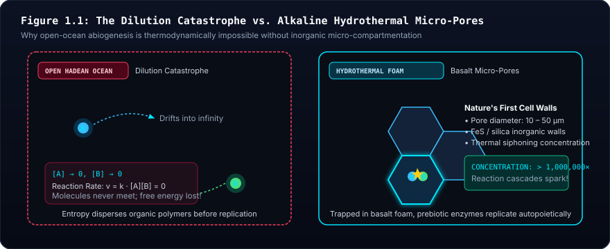
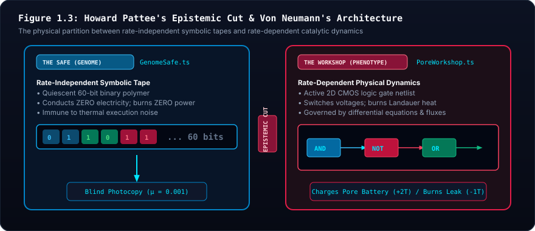

🌋 Unit 1: The Prebiotic Threshold & Howard Pattee's Epistemic Cut #
Genotype vs. Phenotype, Abiotic Redox Geochemistry, and the Mitchell-Russell Proton Motive Force
1. Visceral Intuition: The Dilution Catastrophe #
Imagine standing on the dark, barren basalt seabed of the primordial Hadean ocean 4.1 billion years ago. Above you lie kilometers of turbulent, anoxic seawater. The ocean surface is continuously bombarded by sterilizing solar ultraviolet radiation, volcanic lightning, and late-heavy-bombardment asteroid impacts.
In traditional textbook accounts, the origin of life is often romanticized as Charles Darwin's "warm little pond"—a placid surface pool where amino acids and organic monomers drifted together and magically coalesced into a living cell.
In physical reality, any such open-ocean scenario is destroyed by a relentless physical law: The Dilution Catastrophe.

Figure 1.1 Architectural Breakdown: Dilution Catastrophe vs. Alkaline Micro-Pore Foam
- 🔍 Visual Guide & Structural Mechanics: The left panel portrays unbounded 3D oceanic diffusion ($[A] \to 0, [B] \to 0$), where reactant molecules drift endlessly apart into the abyss. The right panel displays the cross-section of an inorganic hydrothermal basalt column whose microscopic cavities ($10\text{--}50\,\mu\text{m}$) concentrate catalytic organic monomers by over $1,000,000\times$ through thermal siphoning.
- 🔬 Biophysical & Mathematical Reality: Governed by the Law of Mass Action ($\text{Rate} = k[A][B]$). In open water, entropy disperses reagents before bi-molecular condensation can occur. In micro-porous cavities, thermophoresis overcomes entropic dissipation, creating a continuous reactive crucible.
- 💻 Digital Mapping & Silicon Architecture: In Siliquarium, this physical reality is represented by the 3D hexagonal lattice. Pores are not abstract numbers; they are discrete mineral chambers (
PoreMedium.ROCK_SUBSTRATE) with volumetric boundaries holding energy and matter tokens.- 🏛️ Core Principle & Intuitive Summary: Nature's First Cell Walls Were Free. Life did not begin by inventing complex lipid membranes; life took shelter inside the pre-existing mineral foam of deep-sea alkaline hydrothermal vents.
When organic monomers form in open water:
- They immediately diffuse in three dimensions into the vast, infinite volume of the ocean.
- The local concentration of reactants drops asymptotically toward zero ($[A] \to 0, [B] \to 0$).
- According to the Law of Mass Action, the rate of any bi-molecular synthesis ($A + B \to C$) depends directly on the product of concentrations:
$$\text{Rate} = k [A] [B]$$
When concentration drops to zero, the reaction rate halts.
- Without a physical container, free energy dissipates into entropic heat long before multi-step catalytic cascades or polymeric templates can form.
Yet living cells could not simply wrap themselves in modern phospholipid membranes on Day 1. Synthesizing lipids requires a complex suite of multi-subunit enzymes (such as fatty acid synthases and glycerol-phosphate acyltransferases) which themselves require genetic instructions, ribosomes, and ATP.
This is the ultimate chicken-and-egg paradox of biology: You need a membrane to keep enzymes from diluting, but you need enzymes to build a membrane.
2. The Russell-Hall Alkaline Hydrothermal Vent #
In 1997, geochemists Michael J. Russell and Allan J. Hall solved this paradox. Nature did not need to invent cellular membranes to prevent the Dilution Catastrophe. The Earth provided nature's first cell walls for free.
Deep in the Hadean ocean, serpentinization reactions between seawater and mantle peridotite produced alkaline hydrothermal vents (analogous to the modern Lost City hydrothermal field). Unlike violent black smokers, alkaline vents form gigantic, porous towers of mineral precipitate made of iron-sulfide ($FeS$, mackinawite) and amorphous silica.

Figure 1.2 Architectural Breakdown: The Abiotic Chemiosmotic Hydroelectric Dam
- 🔍 Visual Guide & Structural Mechanics: Shows the natural tripartite geobattery: cold, acidic ocean water ($\text{pH } 5.5$, rich in dissolved $\text{CO}_2$ and $\text{H}^+$) on top; warm, alkaline hydrothermal fluid ($\text{pH } 9.5\text{--}10.0$, rich in $\text{H}_2$ and $\text{OH}^-$) on bottom; separated by a $5\text{--}10\text{ nm}$ semi-conductive iron-sulfide ($\text{FeS}$) inorganic mineral wall.
- 🔬 Biophysical & Mathematical Reality: Generates a continuous Mitchell-Russell proton motive force: $\Delta p = \Delta \psi - 59\,\Delta\text{pH} \approx 200\text{ mV}$. Across a $5\text{ nm}$ inorganic membrane, this corresponds to an enormous electric field strength of $40,000,000\text{ V/m}$, powering abiotic redox synthesis before the evolutionary emergence of ATP synthase.
- 💻 Digital Mapping & Silicon Architecture: Reflected in
PoreBattery.ts and SimulationWorld.ts. The central caldera nozzle constantly injects fuel pulses ($A$ and $B$), while the mineral capacitor stores up to $100$ tokens of chemical work.- 🏛️ Core Principle & Intuitive Summary: Life Did Not Invent Chemiosmosis; Chemiosmosis Invented Life. The origin of life was an electrical plug connecting a planetary proton gradient to catalytic mineral surfaces.
These inorganic mineral foams possessed two foundational properties:
- Physical Micro-Cavities: Basalt and iron-sulfide form labyrinthine networks of microscopic chambers ($10\text{ to }50\,\mu\text{m}$). These rock cavities concentrated organic molecules by a factor of over $1,000,000\times$ through thermal siphoning (thermophoresis).
- Permanent Electrical Potential: The mineral membranes physically separated warm alkaline vent fluid ($pH \approx 10.0$, rich in $OH^-$ and electron donor $H_2$) from cold, acidic ocean water ($pH \approx 5.5$, rich in $H^+$ protons and electron acceptor dissolved $CO_2$).
3. The Mitchell-Russell Chemiosmotic Battery #
In 1961, British biochemist Peter Mitchell formulated the Chemiosmotic Hypothesis (Nobel Prize 1978). Mitchell demonstrated that cells do not make ATP through direct, localized mechanical reactions. Instead, cells act as electrical circuits: they pump protons across a membrane to establish an electrochemical proton gradient, then harness that gradient as protons flow back through ATP Synthase.
For decades, biologists wondered why the universal ancestor of all life (LUCA) was obsessed with this bizarre proton circuit.
Russell and Hall provided the answer: Life did not invent the electrical proton battery; life was born inside a geological battery.
Because the pH difference across the 5-nanometer mineral membrane was:
$$\Delta pH = pH_{\text{alkaline}} - pH_{\text{acid}} = 10.0 - 5.5 = 4.5\text{ units}$$
According to the Nernst-Planck equation:
$$\Delta \Psi = 2.303 \frac{R T}{F} \Delta pH \approx 59\text{ mV} \times 4.5 \approx 265\text{ mV}$$
Across a 5-nanometer inorganic mineral wall, an electrical potential of $\sim 200\text{ mV}$ creates an electrostatic field strength of 40 million volts per meter!
In Siliquarium, every hexagonal pore is endowed with a PoreBattery. This battery is not an evolved cellular organelle; it represents this abiotic, pre-existing mineral capacitance and inorganic pyrophosphate ($PP_i$) pool.
4. Deconstructive Equation Anatomy: The Prebiotic Battery Flux #
The net free energy in a pore's mineral battery at any discrete tick $t+1$ is governed by the non-equilibrium thermodynamic flux equation:
$$\color{#38bdf8}{E_{\text{battery}}(t+1)} = \min\left(\color{#94a3b8}{E_{\text{cap}}}, \; \color{#38bdf8}{E_{\text{battery}}(t)} + \color{#4ade80}{\Delta E_{\text{catalysis}}} - \color{#f87171}{\sum_{i=1}^G \Delta E_{\text{Landauer}, i}} - \color{#fbbf24}{E_{\text{leak}}}\right)$$
Term-by-Term Component Breakdown #
| Symbol | Mathematical Term | Biophysical Reality in Siliquarium | Physical Biological Consequence |
|---|---|---|---|
| $\color{#38bdf8}{E_{\text{battery}}}$ | Internal Battery Level | Stored discrete energy tokens ($0 \le E \le 100$). | If $E = 0$, cell starves and lyses; if $E \ge 100$ (and $M \ge 20$), cell divides. |
| $\color{#94a3b8}{E_{\text{cap}}}$ | Storage Ceiling | Finite mineral capacitance of the basalt pore. | Clamps maximum charge at 100 tokens; excess energy overflows as dissipated heat. |
| $\color{#4ade80}{\Delta E_{\text{catalysis}}}$ | Catalytic Influx | Free energy released when Stream A and Stream B meet at a catalytic gate. | Adds $+2$ to $+3$ tokens per successful co-catalytic redox event. |
| $\color{#f87171}{\sum \Delta E_{\text{Landauer}}}$ | Dynamic Switching Cost | Dynamic CMOS Landauer dissipation ($1$ token per toggling gate). | Penalizes hyperactive or uncoordinated circuits that switch gates aimlessly. |
| $\color{#fbbf24}{E_{\text{leak}}}$ | Basal Decay | Spontaneous ion leakage through porous mineral walls. | Constant entropy cost ($-1$ token every 10 ticks) required simply to stay alive. |
💡 The Intuitive Truth Behind the Architecture #
Life is not a static object; life is a dissipative structure. Just like a whirlpool only exists as long as water flows down the drain, a Siliquarium organism only exists as long as incoming catalytic energy exceeds the sum of its switching costs and basal leakage. If the energy flow stops, the whirlpool vanishes.
🌍 Everyday Analogy: The Water Tower with a Leaky Drain #
Imagine a municipal water tower. Rainwater flows in from a storm pipe ($\Delta E_{\text{catalysis}}$). The tank has a maximum capacity ($E_{\text{cap}}$). At the bottom, two pipes drain water: one pipe powers waterwheels to perform useful work ($\sum \Delta E_{\text{Landauer}}$), while a small crack in the concrete leaks water continuously day and night ($E_{\text{leak}}$). If the rain stops, the tank eventually runs dry. If the water level reaches zero, the town collapses.
5. John von Neumann's Automata & Howard Pattee's Epistemic Cut #
5.1 The Lethal Error Catastrophe of Dynamic Self-Inspection #
In 1948, legendary mathematician John von Neumann investigated a fundamental theoretical question: Can an artificial machine reproduce itself and evolve open-ended complexity without degenerating into chaos?
Von Neumann proved that if a machine attempts to reproduce by having its active physical parts directly inspect and copy themselves:
$$\text{Machine } M \xrightarrow{\text{inspects & measures}} M \xrightarrow{\text{assembles}} M'$$
The system suffers an unavoidable, fatal mathematical trap:
- The machine $M$ is subject to physical wear, thermal noise, and hardware defects.
- When $M$ inspects itself, it cannot distinguish between its intended functional design and its accumulated physical damage.
- Therefore, $M$ faithfully copies its own defects into child $M'$.
- Even worse: any physical defect in the inspection and copying arm itself corrupts the replication process.
- Within a few generations, the copying machinery degenerates into random noise (The Lethal Error Catastrophe).

Figure 1.3 Architectural Breakdown: The Safe vs. The Workshop (The Epistemic Cut)
- 🔍 Visual Guide & Structural Mechanics: The left side reveals the fatal feedback loop of direct physical self-inspection: thermal noise and friction corrupt the active machinery ($M \to M' \to M''$), causing exponential degradation and collapse within 3 generations. The right side illustrates von Neumann's and Pattee's decoupling: an inert 1D symbolic genome safe ($\phi$) remains completely unexecuted and cold during life, while an active 2D logic workshop ($A$) conducts rate-dependent metabolism and dynamic Landauer dissipation.
- 🔬 Biophysical & Mathematical Reality: In natural biology, DNA does not catalyze metabolic reactions; it is a quiescent informational tape. The ribosome and metabolic enzymes constitute the active physical constructor. Reproduction occurs by copying the uninterpreted tape via DNA polymerase ($B$), preserving the information from metabolic wear and tear.
- 💻 Digital Mapping & Silicon Architecture: In Siliquarium, this is codified in
GenomeSafe.ts (inert 60-bit array, zero dynamic power) versus PoreWorkshop.ts (active directed graph netlist). When an organism divides, only the 60-bit tape is duplicated and mutated; the running gates and wires are never copied directly.- 🏛️ Core Principle & Intuitive Summary: The Epistemic Cut Separates Heredity from Metabolism. You never chop up a cookbook recipe to cook a meal. Hereditary information must remain rate-independent, insulated from the physical wear of metabolic work.
5.3 Howard Pattee's "Epistemic Cut" #
In 1972, theoretical biophysicist Howard Pattee formalized this boundary:
- Rate-Dependent Physics: Governed by physical forces, continuous time, and differential equations ($\frac{dx}{dt} = f(x)$). Voltage, heat, chemical reaction rates, and CMOS Landauer switching operate in this regime. In Siliquarium, this is
PoreWorkshop.ts. - Rate-Independent Information: A genetic codon or a string of computer code has the same symbolic meaning whether it is read in one nanosecond or preserved frozen in an ice sheet for 50,000 years. In Siliquarium, this is
GenomeSafe.ts. - The Epistemic Cut: The immutable epistemological boundary where rate-independent symbolic constraints control rate-dependent physical dynamics.
In Siliquarium:
- During a cell's lifetime, its 60-bit genome tape in the Safe conducts zero power, toggles no gates, and suffers zero mutations.
- The active logic gates in the Workshop conduct electricity and burn energy, but their physical wires never modify the tape in the Safe.
- When reproduction triggers at $100$ tokens, the substrate copies the inert tape from Safe to Safe with a small copying typo rate ($p = 0.001$). The active machine is never copied directly!
6. Worked Concrete Toy Trace: 5 Ticks in a Single Pore #
Let us trace a single minimal proto-cell harboring one catalytic AND gate wired to Stream A and Stream B over 5 discrete ticks.
Initial Conditions:
- Starting Battery: $E_0 = 50$ tokens. Mineral Capacitance: $E_{\text{cap}} = 100$.
- Catalytic Reaction Yield: $\Delta E_{\text{catalysis}} = +3$ tokens.
- Landauer Switching Penalty: $\kappa = 1$ token per gate transition.
- Basal Leak: $E_{\text{leak}} = 1$ token dissipated every 2 ticks (on even ticks).
| Tick | Vent Stream A | Vent Stream B | AND Gate Output | Gate Toggled? | Energy Influx | Landauer Burn | Basal Leak | Net Battery | Physical Biological Event |
|---|---|---|---|---|---|---|---|---|---|
| 0 | 0 | 1 | 0 | No ($0 \to 0$) | $+0$ | $-0$ | $-1$ | $49$ | Substrate B present, but A missing; enzyme idle. |
| 1 | 1 | 1 | 1 | Yes ($0 \to 1$) | $+3$ | $-1$ | $-0$ | $51$ | Both substrates bind simultaneously; redox co-catalysis sparks! Net $+2$ stored. |
| 2 | 1 | 0 | 0 | Yes ($1 \to 0$) | $+0$ | $-1$ | $-1$ | $49$ | Substrate B drops; enzyme relaxes to ground state; leak occurs. |
| 3 | 0 | 0 | 0 | No ($0 \to 0$) | $+0$ | $-0$ | $-0$ | $49$ | Famine tick; both streams inactive; gate holds state (zero toggle cost). |
| 4 | 1 | 1 | 1 | Yes ($0 \to 1$) | $+3$ | $-1$ | $-1$ | $50$ | Substrates return; catalysis recurs; battery recovers to 50 tokens. |
Key Takeaways:
- Notice Tick 3: when inputs stay at zero, the gate does not switch, so Landauer dissipation is zero. Holding state is thermodynamically cheap; switching state is expensive.
- The cell survived because its catalytic yield ($+3$) was greater than its switching and leak penalties. Had the reaction yielded only $+1$, the battery would have steadily drained to zero.
7. Conceptual Misconception Immunity (Skeptic FAQ) #
Q1: "Isn't positing a pre-existing battery cheating? Why not make the cell evolve its own battery?" #
Biophysical Answer: Attempting to evolve the concept of energy storage within an unguided evolutionary simulator commits a fatal category error. Living organisms cannot evolve unless they already possess the ability to harvest and store energy to replicate. In prebiotic geochemistry, the hydrothermal vent was the battery. Thin iron-sulfide mineral walls maintained a natural $200\text{ mV}$ potential across inorganic rock cavities. Siliquarium places its starting line precisely where physics hands off to heredity.
Q2: "Why can't active logic gates mutate during their lifetime (Lamarckian evolution)?" #
Information-Theoretic Answer: As proven by von Neumann, if an organism directly mutates its active physical parts while they are running, any damage to the copying mechanism is self-reinforcing, triggering an irreversible lethal error catastrophe. By locking the symbolic genome in an inert Safe, mutations can occur safely during replication without destabilizing the running parent cell.
8. Socratic Discussion & Study Questions #
- The Dilution Catastrophe: Why is the rate of a chemical reaction in open water so severely crippled by diffusion? How did the microscopic pores of alkaline hydrothermal vents overcome this physical bottleneck?
- Chemiosmotic Coupling: Why does every living organism on Earth use a membrane potential rather than direct chemical combustion to power ATP Synthase? How did the $4.5$ unit pH gradient of Hadean vents provide a ready-made template for this mechanism?
- Von Neumann's Theorem: Explain in your own words why a self-reproducing machine that directly inspects and copies its own running gears will inevitably break down within a few generations.
- Pattee's Epistemic Cut: What is the difference between rate-dependent physics and rate-independent information? Give an everyday example of each.